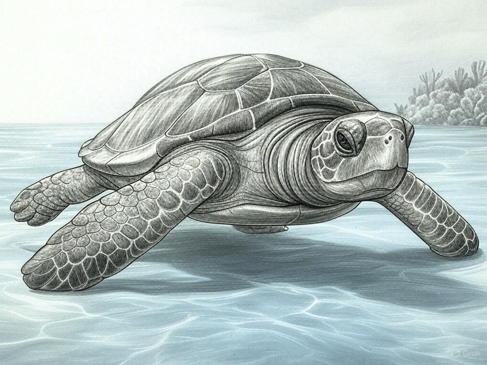

How ROVs Help Turtles
Click a title to learn more!
Tracking Loggerhead Turtles with ROVs
What’s it about? Scientists used a robot submarine (ROV) to follow loggerhead turtles in the ocean!
How it helped:
- Watched 70 turtles for 44.7 hours
- Saw them eat in super cold water (7.1°C)
- Helped make fishing safer for turtles
Loggerhead Results

What we found: 63% of turtle dives were for food!
Big Win: Fishing nets caught 40% fewer turtles by 2018 because of this research!
Cleaning Turtle Homes with a Robot
What’s it about? A cool robot boat picks up trash from rivers so turtles don’t eat it!
How it helped:
- Removed 30 million pounds of trash
- Stopped junk from reaching turtle homes
- Cleaned rivers like the Rio Ozama (100 tons in 1 month)
Cleanup Results
What we found: Over 1,000 tons of trash collected from rivers!
Big Win: Could save up to 1,500 turtles a year from trash trouble!
Saving Turtles from the Cold with ROVs
What’s it about? Robots followed turtles in icy water to see when they get too cold!
How it helped:
- Saw turtles in water as cold as 7.1°C
- 15% acted slow because of the cold
- Helped rescuers know where to save them
Cold Rescue Results
What we found: Turtles get sleepy below 10°C!
Big Win: Rescued over 1,200 turtles in 2014 thanks to this!
How Have ROVs Helped Turtles?
Our Big Question: Robots like ROVs and trash cleaners make life better for turtles!
- Tracking: Watched turtles to keep them safe from nets
- Cleaning: Took trash away so turtles don’t eat it
- Rescuing: Found turtles in cold water to save them
Together, these projects show robots are turtle heroes!